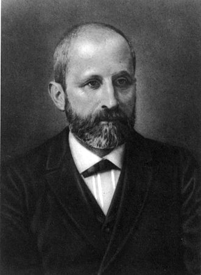
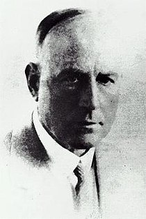
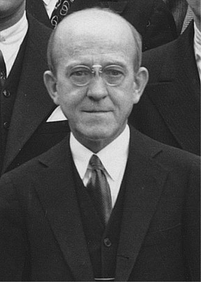
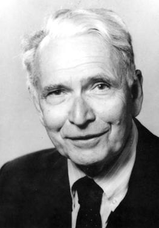
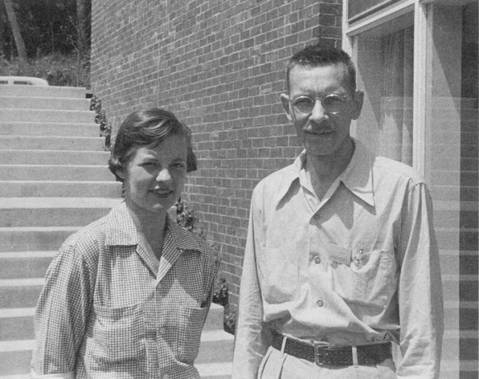
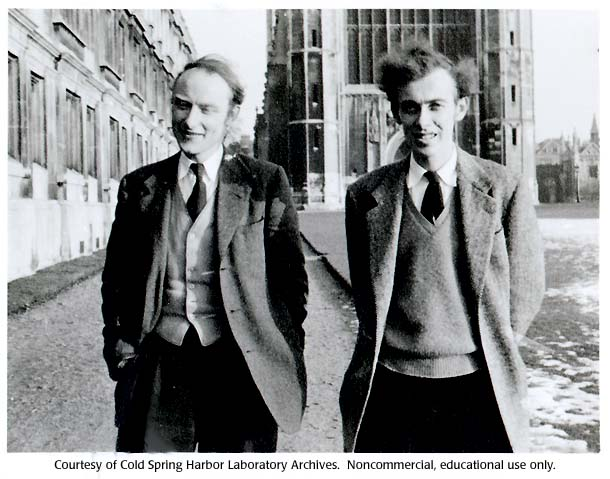

Fundementals of DNA
Deoxyribonucleic acid, or DNA is a double helical polymer that makes up our genetic code. Not only does our genetic code carry instruction for development, functioning, growth and reproduction in our bodies, it is the same for every other living organism. This is true from as tiny as viruses and bacteria, to the largest of animals, the blue whale and even dinosaurs. That being said, it is definitely one of life's most basic building blocks.
Found in the nucleus, during interphase, DNA is mostly in a semi-condensed ball called chromatin. However, during mitosis, or meiosis, the splitting of cells, DNA would condense further into Chromosomes. This would allow for easier crossovers and Anaphase, the splitting of the chromosome. It is possible that DNA can be found outside of the DNA. Chloroplasts and Mitochondria each have their own set past down by the female (This later developed into the Endosymbiotic theory).
Rudimentary Composition
DNA has a backbone that is made of Deoxyribose (pentose-sugar), a phosphate, and its rungs are made of Nitrogenous bases. This entire piece (Backbone, Phosphate, Base) is known as a nucleotide. While it is condensed for, DNA will also contain Histonine to help bind and keep the DNA from breaking.
A DNA's nucleotide is the monomer of the DNA polymer. Essentially, this means that many of these nucleotides strung together will make DNA. The same pieces over and over again will not create code that is capable of creating life (It's like a binary sequence with all 0s). Therefore, nucleotides will include some variation in its bases.
This variation allows for 4 different bases, Adenine, Thymine, Guanine, Cytosine. Adenine and Guanine being Purines, the bigger of the Sugars (containing two rings), and Cytosine and Thymine, Pyrimidines, the smaller one ringed base. These Sugars, also known as Nitrogenous Bases connect together to form the rungs of DNA's Helical Ladder. Scientists have found that in the ratios of Nitrogenous Bases, Adenine and Thymine contents are the same, Guanine and Cytosine contents are the same. They concluded that Adenine pairs with Thymine in a weaker double hydrogen bond, and Guanine and Cytosine in a stronger triple hydrogen bond.
Nucleotides Anatomized
The previous statement that the Nucleotides were monomers of DNA, and contained three basic parts is the most basic of understandings. The Nucleobases are the Nitrogenous bases as aforementioned. The pentose-sugar, deoxyribose, and the Nucleobase together, forms a Nucleoside. Finally, a phosphate is added to the pentose-sugar's end, thus forming a nucleoside monophosphate.
While there are Nucleoside biphosphates, and Nucleoside triphosphates (basically adding extra phosphates to the end), the main focus here is the N.monophosphate. This is because it is here, in the first phosphate that connects two nucleotides together. Alas, the N.biphosphates and the N.triphosphates do have uses, only in the primary DNA Structure, they do not appear. The first phosphate in the N.monophosphate forms a hydroxyl group with the pentose-sugar above. This being that the hydrogen ion of Deoxyribose, and the oxygen of the phosphate group form a covalent bond, betterly known, a hydroxyl group (-OH).
These hydroxyl groups bond in a way so that the Deoxyribose, a furanos (five carbon sugar), is pointing its 5th carbon to the top, and 3rd carbon at its bottom (in relation to the oxygen being on top). The 3rd carbon being the one near the hydroxyl group, and the 5th, being the one outside of the ring, and connected to the phosphate group.
(Hover over us!)





